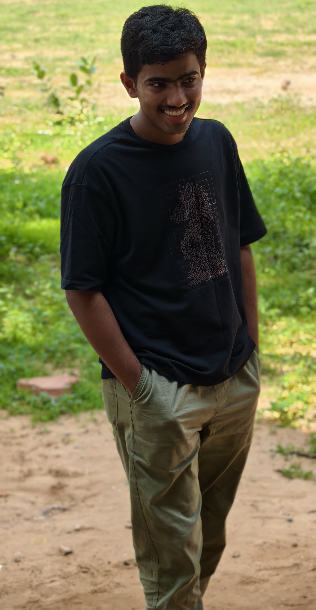

GET TO KNOW ME
A LITTLE
ABOUT ME.
I'm Abinav Sundar — a creative individual interested in building useful digital experiences and creating visuals that leave an impression.

MY STORY
Creativity meets
technology.
I'm passionate about web development, video editing and poster designing. I enjoy turning ideas into polished digital work, learning new tools and improving with every project.
I my perusing my grade 12 in Pearls Public School, Arumuganeri. From my 7th class I have being interested in computer software and hardware. so I learnt HTML, CSS, JS, Python, C, C++ and Java, all in basic level. I tried to create a website something useful to showup my portfolio, but I failed to do the at that age. Simultaneously I have participated in State level Science expo and got 3rd prize or Rs:5,000 (my first earning). Then I had my 10th board exams, I passed with 90%. During my summer holidays I again start working in my Web development idea and successfully completed but i didn't published it online, I need something more attractive, So i get the help of some AI and created what you are seeing. Now as a young guy, I'm able to create a responsive website and convert your ideas into web pages or int a creative video.
TOOLS & EXPERTISE